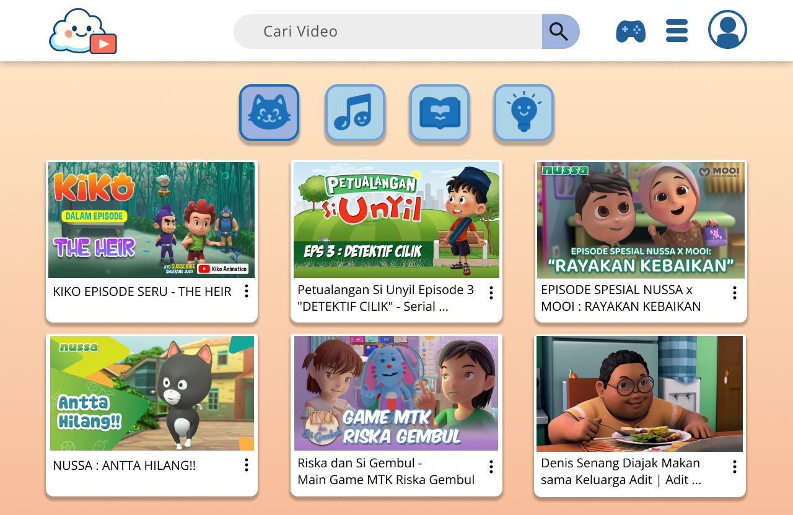
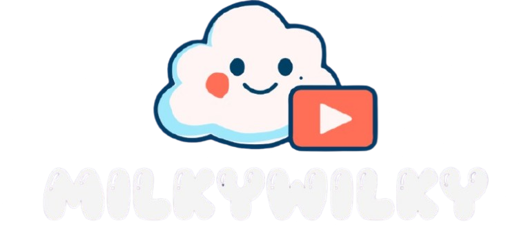
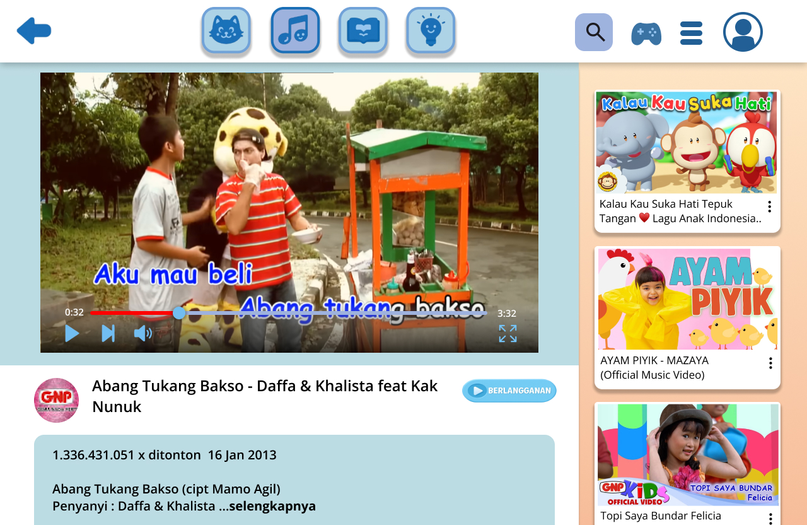
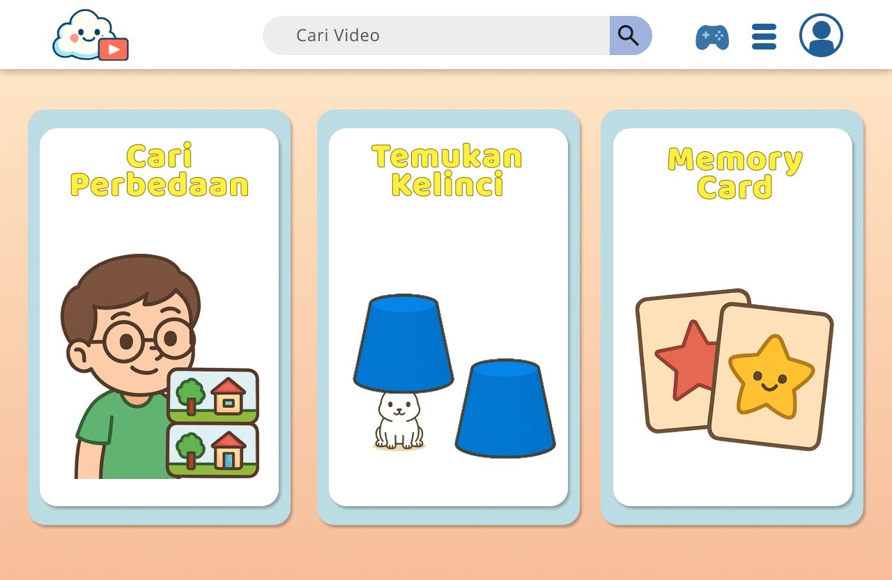
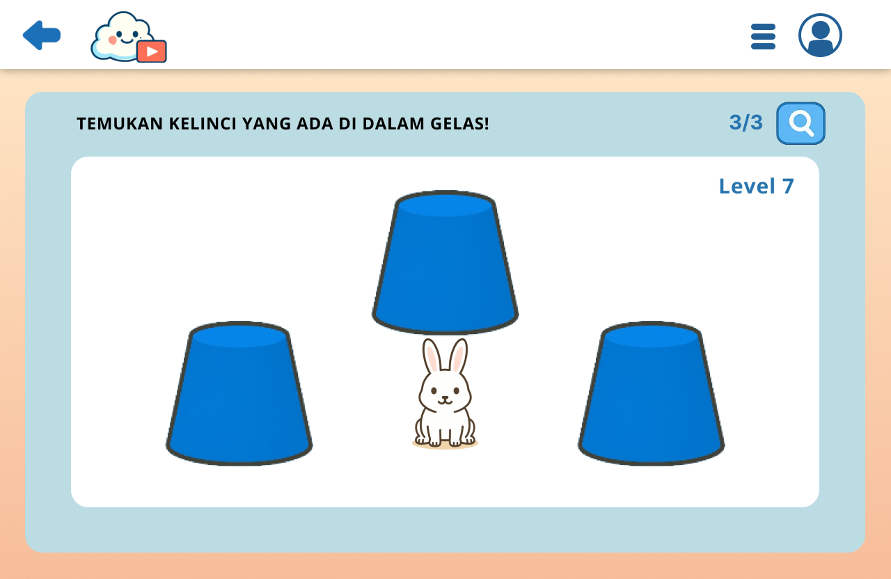
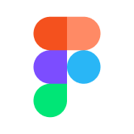
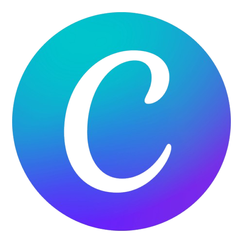

Layanan Streaming Video Ramah Anak
STORY OF THIS PROJECT

MilkyWilky adalah konsep layanan streaming video untuk anak-anak yang dibuat sebagai penilaian tugas akhir mata kuliah Desain Kreatif. Proyek ini mengeksplorasi cara menyajikan konten video anak melalui antarmuka yang ceria dan mudah dijelajahi.

Rancangan menampilkan pengalaman menonton yang dilengkapi daftar video lain untuk membantu anak menemukan tontonan berikutnya. Ilustrasi, warna, dan komponen antarmuka disusun agar layanan terasa menyenangkan dan sesuai dengan audiens anak.

Selain video, rancangan juga memperlihatkan area permainan sebagai bagian dari pengalaman MilkyWilky. Proyek ini menjadi latihan menerapkan prinsip desain kreatif ke dalam konsep produk digital yang memiliki identitas visual dan alur penggunaan yang konsisten.
MilkyWilky merangkum eksplorasi desain layanan hiburan anak ke dalam sebuah konsep streaming yang menggabungkan tontonan, permainan, dan tampilan visual yang ramah anak.
TOOLS USED FOR THIS PROJECT

Figma
CanvaRESULT OF THIS PROJECT
Mari kita bangun sesuatu yang luar biasa bersama
Terbuka untuk kesempatan magang, project freelance atau kolaborasi riset.